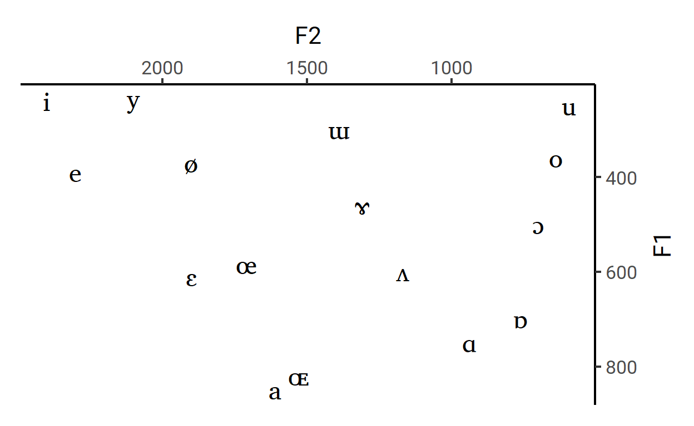
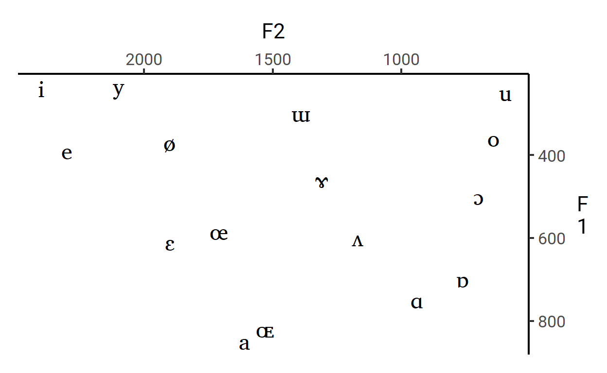

Five alternatives to the default vertical y-axis title
Aside from the general want of authoring something titled “Rage against {X}”, there’s a good reason for my dislike of vertical y-axis titles: it’s practically unreadable. I don’t think that this is really controversial - everyone already sorta knows that vertical text is harder to read than horizontal text (I mean, just try reading this while tilting your head 90 degrees).
But in case you still need facts and logic, here’s a plot from Byrne (2002) that compares response times on a task where participants read out loud texts that were in different orientations(Byrne 2002). Rotated vertical text is overall just harder to read than horizontal text.1
Figure 1: Ironically(?), the y-axis title is vertically aligned here
But my point here isn’t to just tell you what you probably already know. What I want to do is to show you that there are multiple, better alternatives to the default vertical placement of the y-axis title that are not that hard to easy implement. Moving away from vertical y-axis titles takes 5% not being lazy and 95% just knowing that other valid alternatives exist, so in this blog post I just want to showcase a couple ways of labeling the y-axis in a more readable way.
As is the case with many provocative blanket statements, I obviously don’t think that all vertical y-axis titles are bad.2 But I do think they don’t have to be that way for a lot of the times that I see them. And like I said earlier, we should actively try to minimize any use of vertical text alignment if readability is our primary concern.
That’s why I feel strongly about this for academic research, which is the position where I’m coming from. There’s one really unique fact about academic research (particularly experimental works) that lends itself to avoiding vertical y-axis titles:
The y-axis is often your dependent variable - the measure that your findings hinge on and the thing that you just spent the past several slides or pages talking about.
This puts the y-axis title in a very interesting position. It’s something that’s strongly implied before your readers even see the plot due to the rich surrounding context, but it’s also something that you really want to emphasize and drill into your reader’s heads.3 This might sound like a tough balancing problem, but I actually think it just gives us more room for flexibility and creativity!
Here’s the theme that I’ll be working with:
theme_set(
theme_classic(base_family = "Roboto", base_size = 16)
)
theme_update(
plot.margin = margin(.5, .5, .5, .5, "cm"),
plot.title = element_text(
family = "Roboto Slab",
size = 24,
margin = margin(b = .5, unit = "cm")
),
plot.title.position = "plot",
axis.title.x = element_text(
margin = margin(t = .5, unit = "cm")
)
)This isn’t actually that great of a tip because it’s almost equally hard to make a good horizontal y-axis title, but it is an attempt at trying to make the y-axis title more readable.
Of course, it works best when the y-axis title is short, like in this vowel chart using the acoustic profile of vowels as reported in Wikipedia.
library(rvest)
vowel_plot <- read_html('https://en.wikipedia.org/wiki/Formant') %>%
html_node(xpath = '/html/body/div[3]/div[3]/div[5]/div[1]/table[2]') %>%
html_table() %>%
select(1:3) %>%
rename_all(~c("Vowel", "F1", "F2")) %>%
ggplot(aes(F2, F1)) +
geom_text(aes(label = Vowel), size = 6, family = "Charis SIL") +
scale_x_reverse(position = "top") +
scale_y_reverse(position = "right") +
theme(
axis.title.x.top = element_text(
margin = margin(t = 0, b = .3, unit = "cm")
),
axis.title.y.right = element_text(
angle = 0, vjust = 0.5, margin = margin(l = .3, unit = "cm")
)
)
vowel_plotHere, our y-axis F24 is two characters long, so just making it horizontal just works.
And of course, this looks better than the vertical alternatives:
vertical1 <- vowel_plot +
theme(axis.title.y.right = element_text(angle = 90))
vertical2 <- vowel_plot +
theme(axis.title.y.right = element_text(angle = -90))
vertical3 <- vowel_plot +
labs(y = "F\n1")

ggplot(data = xy) +
geom_point(aes(x = x, y = y)) +
theme_classic(base_family = "Montserrat", base_size = 15) +
theme(
plot.margin = margin(1, 1, 1, 1, "cm"),
plot.title = element_text(family = "Roboto Slab", size = 24, hjust = 0.5,
margin = margin(b = 1, unit = "cm")),
axis.text = element_text(family = "Roboto", color = "black"),
) +
coord_cartesian(clip = "off") +
labs(y = NULL, title = "Interesting title") +
scale_y_continuous(labels = function(x, text = " ms", dir = "backward") {
pos <- detect_index(x, negate(is.na), .dir = dir)
x[pos] <- paste0(x[pos], text)
x
}) +
annotation_custom(
textGrob(x = 0, y = 1.05, "Miles per hour", gp = gpar(col = "gray20", fontsize = 15, fontfamily = "Adelle"))
)
ggsave("hi.png", width = 15)Do I really need the y-axis title to be long?
Do I really need the y-axis title to be vertical?
Do I really need the y-axis title to be to the left of the y-axis?
Do I really need the y-axis to be titled at all?
Byrne, Michael D. 2002. “Reading Vertical Text: Rotated Vs. Marquee.” Proceedings of the Human Factors and Ergonomics Society Annual Meeting 46 (17): 1633–5. https://doi.org/10.1177/154193120204601722.
If you need more evidence, here’s a subtler one: there’s no standard for the direction of vertical text. Just go outside and look at vertical store signs and banners on street lights! Some are stacked, some are rotated right, and some are rotated left.↩︎
In fact, I still use them sometimes, though less and less↩︎
Hot take: the whole paper is actually just a big build-up to that one plot in your Results section↩︎
This is the shorthand for “the second formant”, and it roughly corresponds to the frontness of the tongue↩︎